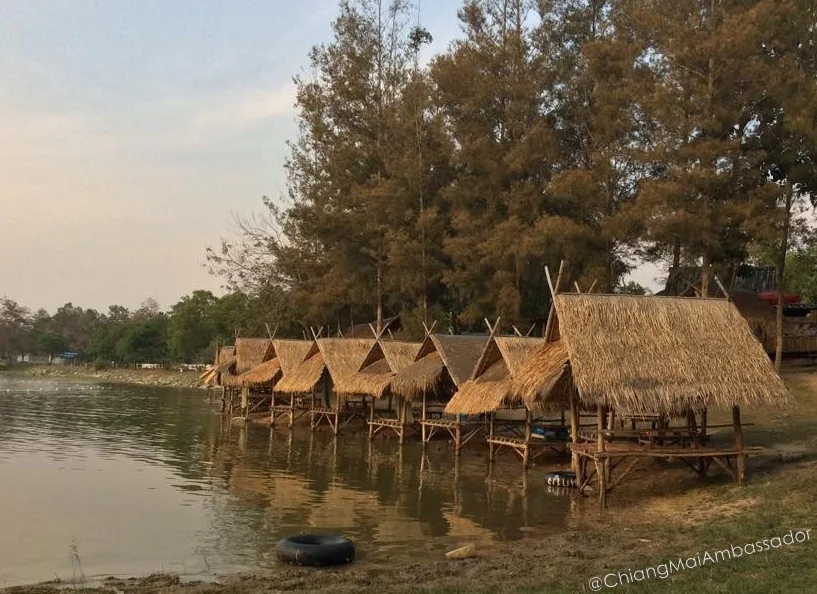

Life on a Budget in Chiang Mai. How to live on around 10000 baht per month.
So you may have seen all the posts about “How Cheap it is to live and be a nomad in Chiang Mai” or the posts about “How much I make and how much it costs to live in Chiang Mai.” I promote a few good services and other things, but in general, I don’t make much money off the advice I share or give. I have on occasion received a soda or meal from friends who appreciated my information and time. Maybe in the future, this will change, but until then I am happy to share what I have and know.
So, here is a slightly different version of “Life on a Budget in Chiang Mai”. When I am connecting with others and sharing my monthly expenses people are usually surprised with the amount I live on.
There are many things that you can do to live on a smaller amount here in Chiang Mai. Firstly, being local can save you a bunch, having even the slightest amount of Thai language can help you out a lot. I have a couple of cheat sheets for the “Basics of Thai“
I am not proposing you do what I do, because you can’t and don’t have to! But maybe I can share some tips and tricks to get yourself some good deals.
Daily Life
I live and work(unpaid volunteer) in the area known as Chang Puak, just north west of the old city. This is a money saver, because it virtually costs me nothing to get to where I spend my days. Cheap in time and money! So one big consideration for you is to be close to where you want to be most of your time.
I have two motorbikes, a Honda Click and Honda Air Blade, they are both great for running around town, but I wouldn’t take them very far. It is only about 100 baht per week for fuel or USD$3. I just registered both bikes and that cost a whopping 550 baht each or around USD$16 for the year, including compulsory insurance
Accommodation
So, I live in Chang Puak (or “Santitham”. has a history, so I use this name in some places, not others), it is a basic university housing area, because it is 5 minutes away from two of the big Chiang Mai Universities and many of the vocational colleges. Rooms run from 2000 baht per month to around 6000 baht, but you can probably find “dumps” cheaper and “palaces” more expensive.
I pay 4000 baht for my room and because of it’s position I get a lovely cool breeze 90% of the time, so have no use for the supplied air conditioner. Utilities average around 500 baht per month, so I am not complaining. internet and 60 channels of “cable TV” are included. Thankfully, I also get every Liverpool game on my TV.
Food
In Chiang Mai you have so many sources of food and sometimes the most expensive option is to eat at home. Personally, I am extremely lucky to live and work on a street with one of the best restaurants in Chiang Mai. It’s not the Shangri-La, the Le Meridien or McDonald’s, but a small family run business, that is always full of local Thai people(the best sign) and a fair few of my converted contacts and colleagues.
I tell people, that I don’t have to go to the supermarket, buy the food, keep the food cold, clean the food, prepare the food, cook the food or even clean up after the food. And each meal costs 40 baht. I am not the smallest guys and I walk away satisfied every time. It’s almost fast food also with me taking about 15 minutes each meal unless the place is packed.
If you want to know more, maybe I can share my secret. It’s where I end up in my video. .
Look for the blue and white awning directly across the road from Tipparat Place Hotel.
Other Food
Occasionally, I have to eat elsewhere and if you have a look around this blog you will find a few of my regular places, they are usually when I spoil myself for a once a week or so, buffet dinner or lunch.
If I have someone to take out, usually I will take them to try a place I haven’t been to, to see if there are other Chiang Mai restaurants I can recommend. I will hit up Tripadvisor to choose. But most times I am dreaming of my “local”.
Phone & Internet Access
I am running an AIS service and have been for five and a half years, I switched to post paid a couple of years ago and it works better for me. I spend about 50 baht on calls per month. I changed to 6mb monthly internet subscription and all up it costs around 650 baht per month.
I have an acceptable Wifi internet included in my accommodation and don’t have excessive needs anyway. I also have internet in my workplace, so no extra charges there.
Entertainment
I don’t smoke, drink alcohol or coffee, so that is a massive money saver!!! You probably won’t be giving up your beer or spirits for me, so my budget life doesn’t include these “luxuries and relaxants”. However, I do know that many people “BYO” to many venues and whilst it’s not encouraged, I know it happens. Most venues will be happy to serve you mixers to go with your BYO, but sometimes they will ask a modest charge for you to BYO. Saying this, if you don’t want to take your bottle home or are planning to be a regular and you don’t finish your bottle that night they will keep it for you for next time.
Coffee
If you want coffee, the best resource for coffee without doubt is my friend’s blog. Chiang Mai Coffee Lover . I have never drunk coffee either, so I know nothing except that many people love coffee and need it daily. If there is one thing about Chiang Mai, that’s not about the massive numbers of Nomads here, that there are a massive number of coffee shops here, with the numbers growing almost daily. It has been said that there is a new coffee shop opened every second day in Chiang Mai, it fails to mention how many are closing. I will however mention a couple that are closer to my heart, Akha Ama and Bay’s Cafe. Lee at Akha Ama is inspiring, watch him at TEDx Chiang Mai.
Networking
It doesn’t cost that much to network with great people. The different communities of people in Chiang Mai are interesting and a great outlet if you want to be socially active. One awesome thing about Chiang Mai is that it is one of the Creative Cities of South East Asia, so there is always something going on. You can sign yourself up to get an email every Monday morning to let you know everything that is happening that week or month. Do this by emailing charityrooftopparty@gmail.com . The other way to find out what is happening is the Chiang Mai Events Facebook Group.
There are so many different social and sporting activities you can connect up and I have listed them in my Chiang Mai Basics page. Watch out for all the personal development opportunities led by some of the Chiang Mai Digital Nomads.
The details in Baht for my Life on a Budget in Chiang Mai
Accommodation. average 4500 per month
Food & Living. 1000 per week
Internet & Phone. 300 per month
Fuel. 500 per month
Incidentals. 1000-1500 per month
OUTSIDE OF BUDGET and not included above
Travel Insurance. AUD$1000. yes it is expensive, yes I should factor it in, but it is a once a year payment from outside funds. I recommend EVERYONE SHOULD HAVE INSURANCE. Living (especially driving) is dangerous in Thailand.
Medical and Dental. not an every day expense. I have spent approximately 10,000 baht in my 8 years.
Visas and Work Permits. approximately 15000 baht per year. 5000 government fees and 10000 suggested donations to my foundation.
Other long term visa options are around USD$1000-1500 per year and some good options are available at CMLOCALS. Free Visa Advice page.